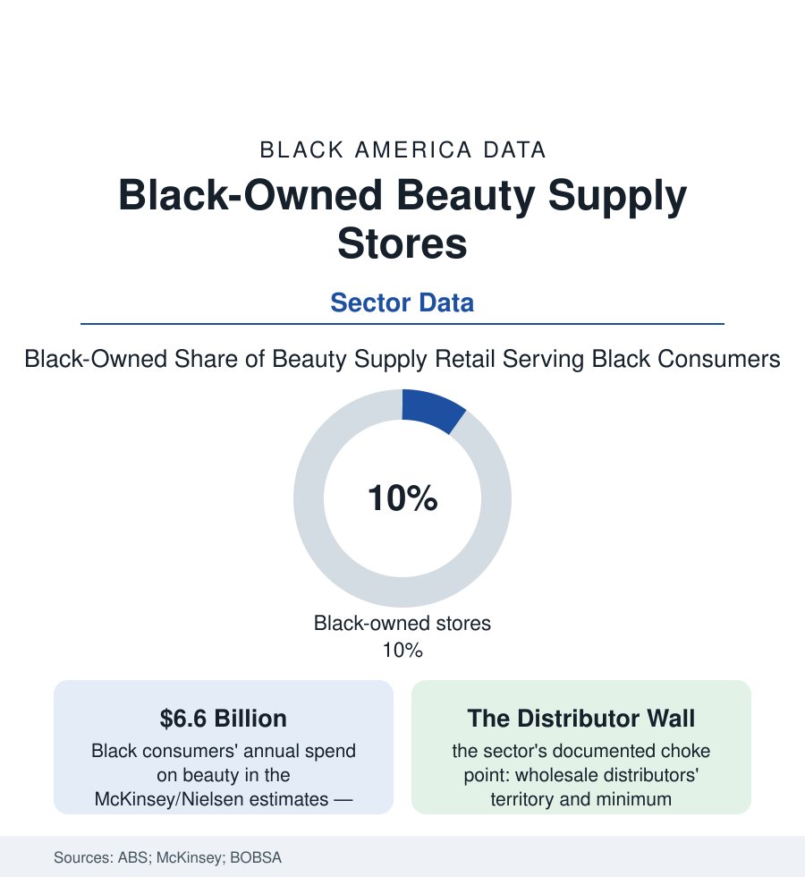

Black Business
Beauty Supply: The Store Where the Customer and the Owner Rarely Match
Black women drive the ethnic beauty aisle's billions — and the stores selling to them have historically been owned by almost anyone else. The ownership data and the shift underway.

The beauty supply store is a fixture of the Black commercial landscape — the wall of hair, the braid bar's supply run, the Saturday crowd — and it holds one of the business file's most remarked mismatches: the customers are overwhelmingly Black women, the multi-billion-dollar spend is theirs in the Nielsen and McKinsey data, and the store owners, historically and measurably, mostly are not. Black-owned beauty supply retailers — organized under their own association, the Black Owned Beauty Supply Association — are the sector's insurgency, and their fight is less about the storefront than the warehouse behind it. This article reads the beauty supply file.
The Mismatch and Its Machinery
The ownership structure's history is industrial, not accidental: the post-1965 immigration era's Korean merchant networks built the ethnic beauty trade's wholesale spine — the import relationships with the Korean and Chinese hair manufacturers, the distribution houses of Los Angeles, Chicago, Atlanta, and New York, the retail clusters that followed the distribution map — a vertically linked system whose mechanics BOBSA's literature documents from the receiving end: the territory understandings among distributors, the minimum-order and cash terms set against the independent Black retailer, the hot brands allocated to the established accounts. The Black retailer's counter-history runs alongside in the record: the pioneers who bought anyway and built chains of their own, the buying cooperatives attempted across the decades, the litigation and boycott episodes of the trade press, and the association itself — BOBSA's founding in the 2000s as the sector's collective instrument (the trade shows, the distributor negotiations, the store-count the association itself keeps, running in the hundreds nationally against the sector's thousands). The demand side's data sharpen the paradox to a point: Black consumers account for the overwhelming share of the ethnic hair and beauty categories' dollars in the Nielsen panels — the customer is the market — while the retail margin, the wholesale margin, and the manufacturing margin on her purchases have historically exited her community in three directions at once, the beauty file's version of the buying-power article's leakage arithmetic.
The Shift: Brands Up, Stores In
The movement's modern strategy attacks the chain at two links simultaneously, and the data show both moving: the brand link (the Black-founded beauty brands of the beauty-industry article — the shelf's fastest-growing names — whose founders negotiate placement from a position the 1990s independents never held, and whose direct-to-consumer channels route around the distributor wall entirely, the e-commerce data's quiet revolution in who can sell a Black woman a bottle) and the store link (the new-generation Black-owned supply stores — design-forward, service-led, the natural-hair era's clientele served by owners who wear the product, their openings tracked by the association and the local press as civic events in city after city), plus the wholesale link itself (the Black-owned distribution ventures and the import partnerships the trade press now records — the wall being climbed, tunneled, and in places simply bought). The consumer's role is measured in the survey data: the stated-preference batteries (Black shoppers reporting active seeking of Black-owned beauty retail at rates the pollsters find across few other categories — the buy-Black disposition of the buying-power file at its most operational), and the natural-hair transition's market effect (the relaxer aisle's decline and the natural-care segment's rise in the sales data — a demand revolution authored by the customer, repricing every shelf in the store). The sector's honest ledger keeps its frictions in view: the capital file's terms for a thin-margin retail build-out, the lease map's beauty-desert blocks, the online price war against the storefront's rent. But the direction in the counts is one-way: the association's store list lengthens, the brands multiply, and the oldest sentence in the trade — that Black women buy and others sell — is being revised by its subjects, one lease and one purchase order at a time.
Reading the Beauty Supply Data
Six billion dollars of demand, a tenth of the stores, and the wall in the warehouse: beauty supply is the business section's cleanest diagram of how ownership is defended — not at the register, where the customer is queen, but upstream, where she never looks. The insurgency's insight is the file's conclusion: follow the margin home. The association publishes its count every year. It is the only number in the sector that only moves one way.
More in Black Business
Black-Owned Businesses: Counts, Receipts, and the Representation Gap
About 161,000 Black-owned employer firms and three million solo ventures: how the Census Bureau counts Black business ownership, where firms concentrate, and the gap between population share and business share.
Black Median Net Worth: The Wealth Gap in Federal Reserve Data
The Federal Reserve puts Black median family net worth at $44,900, against $285,000 for White families — about 16 cents on the dollar. The widest gap in economic data.
Black Buying Power: The $1.8 Trillion Consumer Economy
Black buying power is estimated at about $1.8 trillion — larger than the economy of most nations. What the figure measures, who produces it, and what it buys.
Source: U.S. Census Bureau Annual Business Survey; Nielsen and McKinsey Black beauty economy research; Black Owned Beauty Supply Association records; industry trade data.